Sales Officer & Display Support
Al Batal Furniture Exhibition · Giza, Egypt
Furniture-focused sales, client solutions, product display and showroom support.
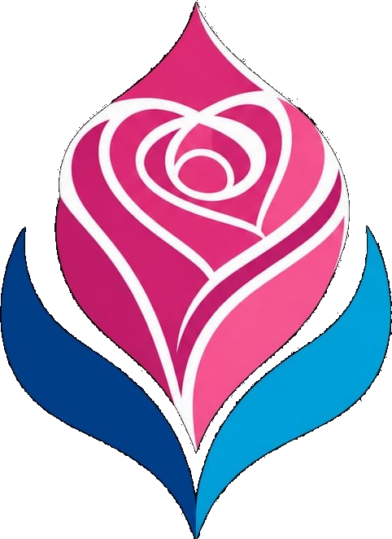
ROSEDESIGNSEMAN MOHAMED
AHMED ABBAS
Interior Designer · Rose Designs
I design spaces that work first — then make them unforgettable.
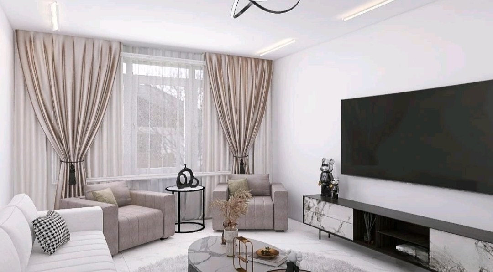
Rose Designs
“I don’t design rooms to be photographed. I design them to be lived in.”
A portfolio built around function, proportion, material, light and the human experience — with visual presentation used to make the design clear, not to hide it.
Selected Work
Concept design, visualization, furniture and execution follow-up — presented as concise case studies.
01 / Residential Interior
A soft contemporary living room organized around a clear social zone and media wall. Warm neutrals keep the room calm, while black accents and marble-pattern surfaces add controlled contrast.
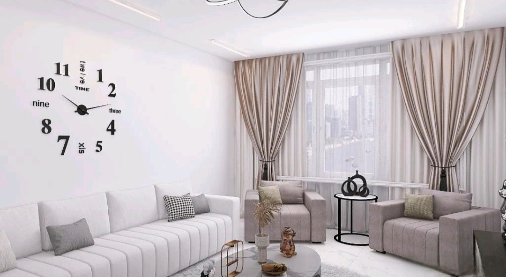
The room stays intentionally quiet. Instead of adding more color, contrast is concentrated in the television, side-table frames and media-console details so the eye always understands the hierarchy.
02 / Residential Interior
A calm bedroom and dressing environment built from symmetry, soft neutrals, practical storage and natural light. The wardrobe is treated as part of the architecture rather than as a separate object.
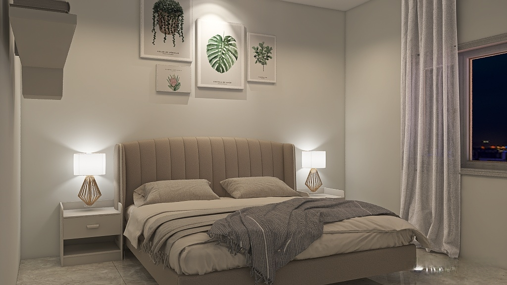
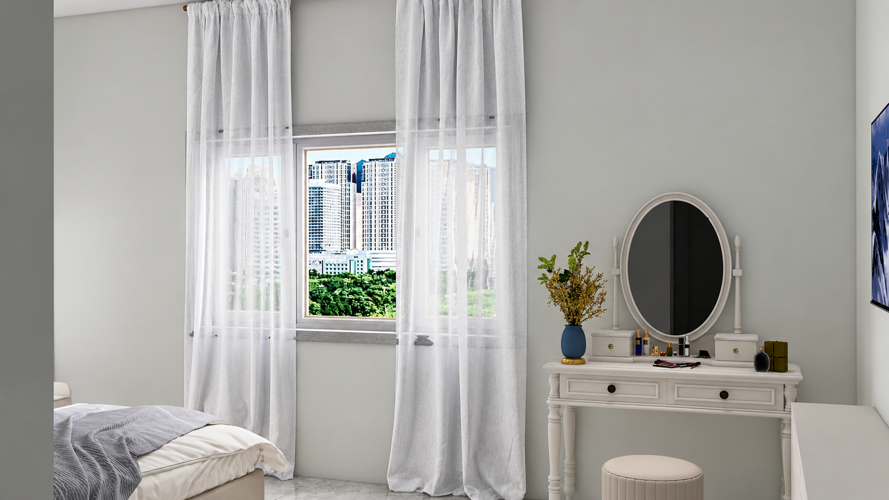
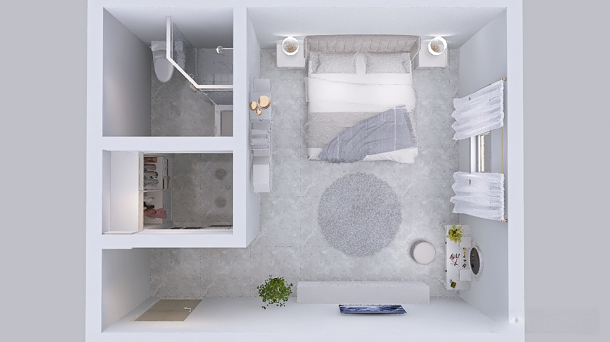
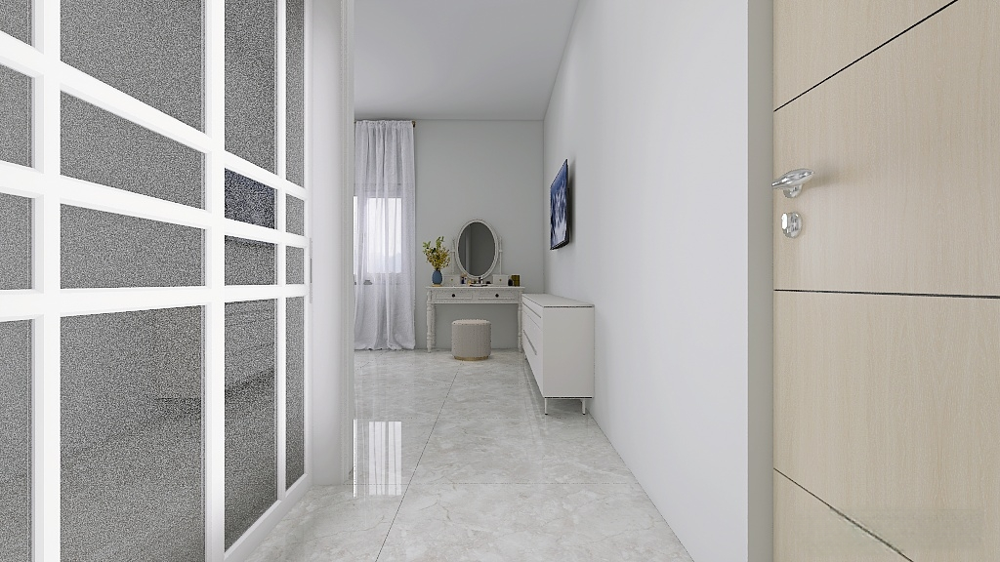
What holds it together
Balanced bedside elements establish the bed as the clear focal point.
Dedicated hanging, shelving and drawer zones make the wardrobe practical to use.
White joinery, sheer curtains and reflective flooring keep the space visually open.
03 / Executed Interior
An executed office interior focused on a clean work zone, simple guest seating and a restrained palette. The project reflects hands-on involvement beyond the screen: design decisions were followed through during preparation and execution.
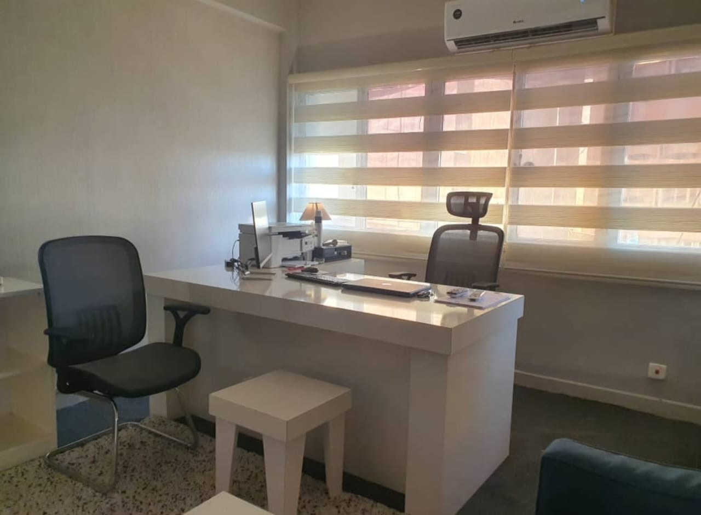
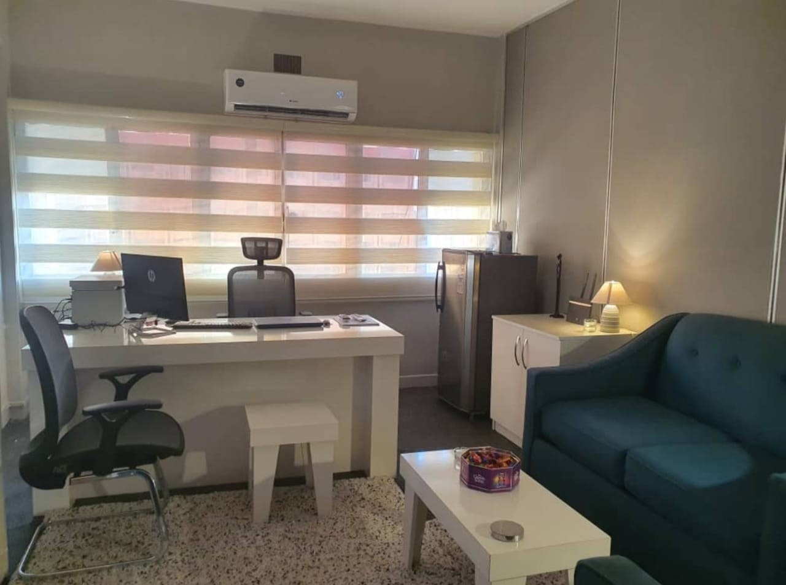
A good office should make work easier — not simply look “corporate.”
04 / Joinery + Execution
From cabinet planning to on-site follow-up, this project shows the practical side of interior design: fitting storage into the real room, resolving corners and keeping work surfaces usable.
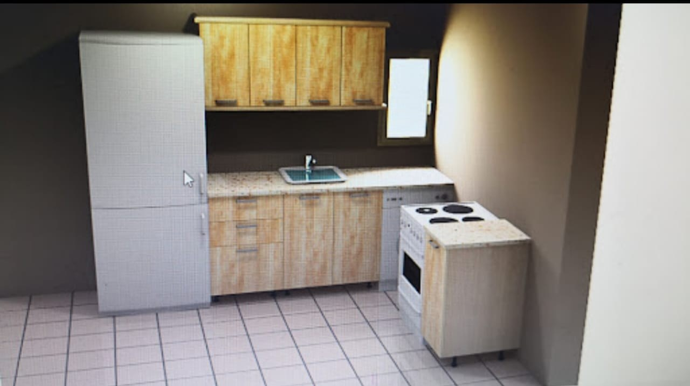
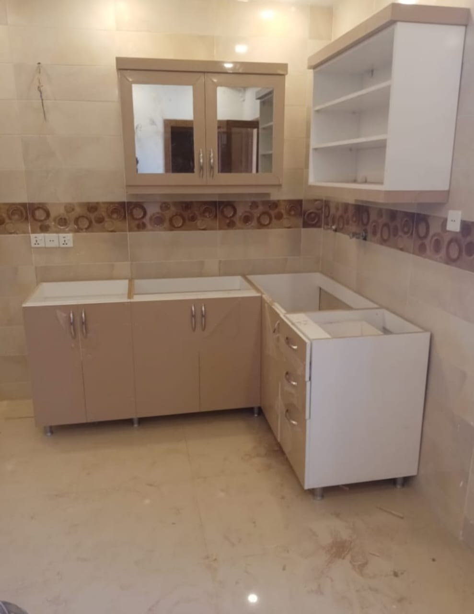
05 / Selected Studies
Selected studies showing furniture thinking and spatial modelling beyond the final interior render — useful for testing proportion, repetition, circulation and product relationships.
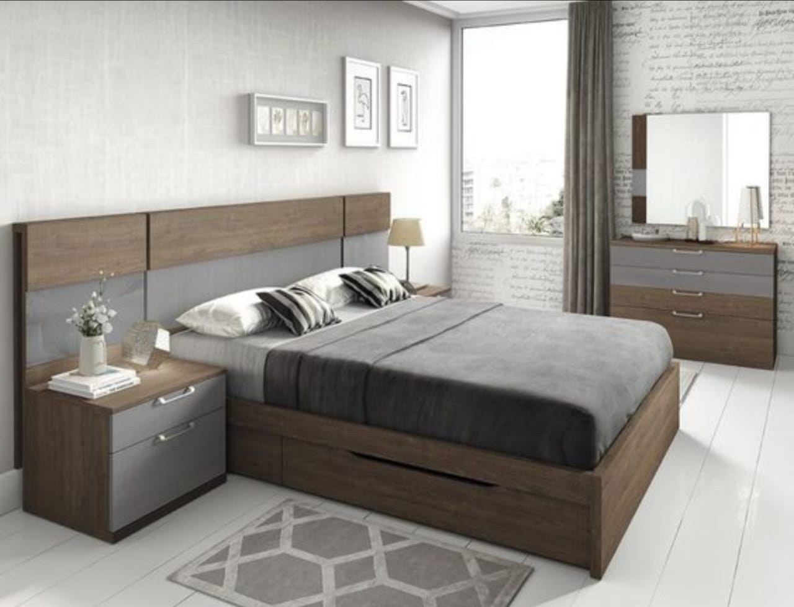
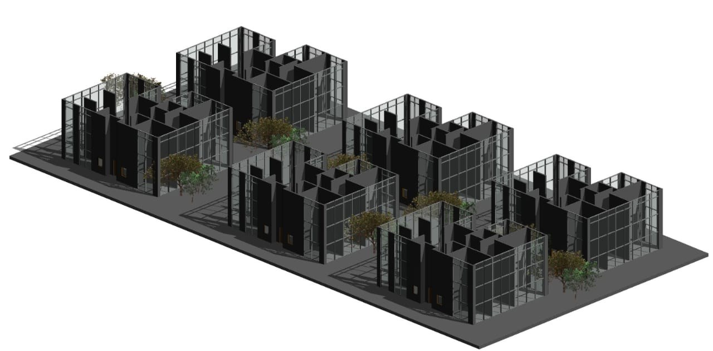
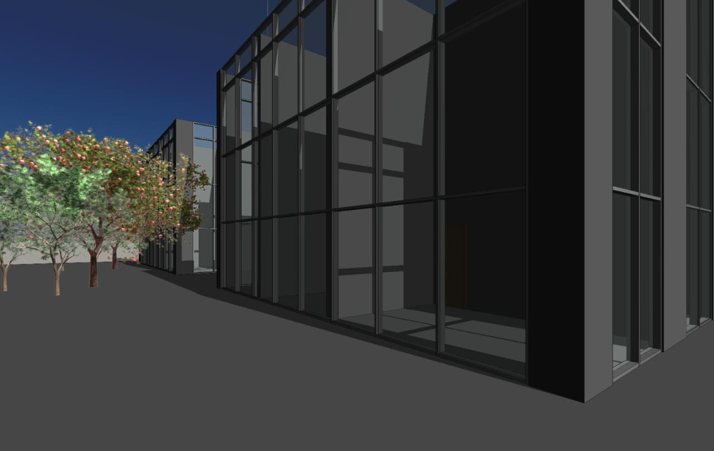
06 / Furniture Design
A custom furniture study focused on practical storage, clean proportions and the contrast between warm wood finishes and dark framing.
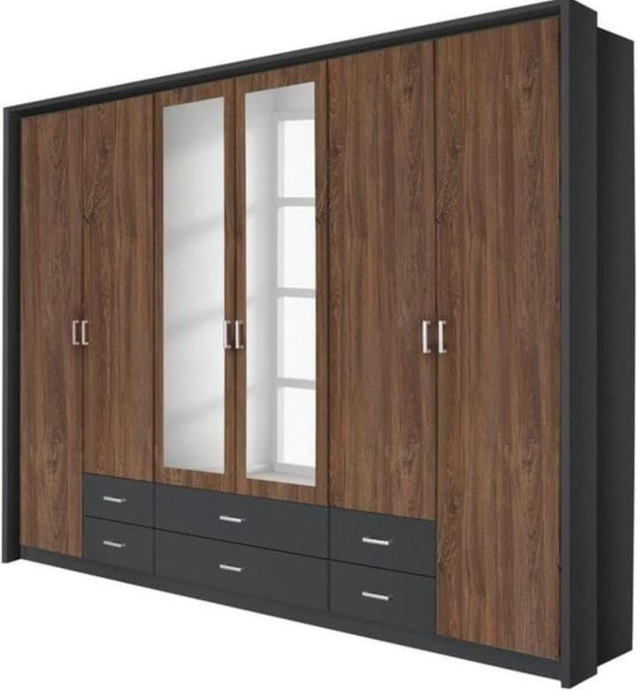
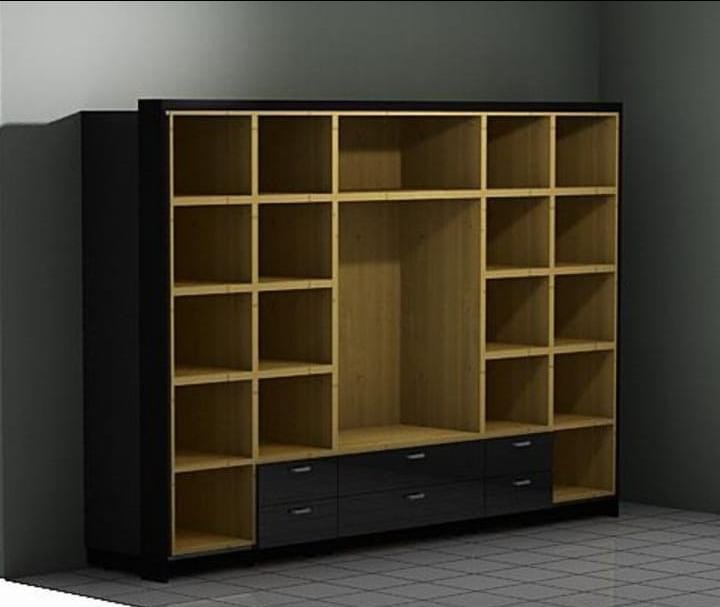
About
I’m Eman Mohamed Ahmed Abbas, an interior designer with experience across interior and furniture design, real-estate project execution, client-facing furniture work and visual communication.
My process starts with how a space needs to function, then moves through proportion, furniture, material, color, lighting and presentation. I’m comfortable working from concept through visualization and following design decisions into execution.
Background
Only the roles most relevant to interiors, furniture and project execution.
Al Batal Furniture Exhibition · Giza, Egypt
Furniture-focused sales, client solutions, product display and showroom support.
Trend Real Estate Company · Khartoum, Sudan
Project execution supervision, internal coordination, documentation and visual marketing.
Bintash Factory · Khartoum, Sudan
Furniture and PVC door/window design with customer-facing product selection.
Banan Architecture Company · Khartoum, Sudan
Interior design work using AutoCAD, 3ds Max and ArchiCAD with project implementation exposure.
Education
Sudan University of Science & Technology · College of Fine and Applied Art
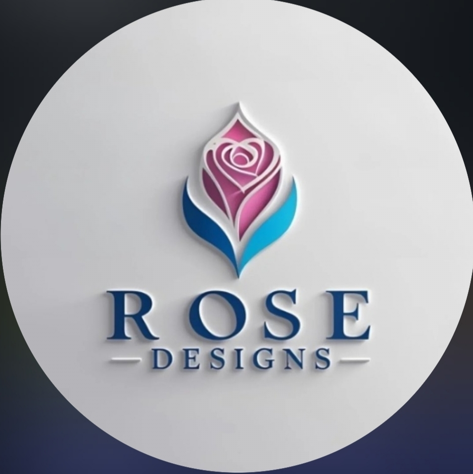
Let’s work together
I’m available for interior design opportunities, collaborations and remote work.